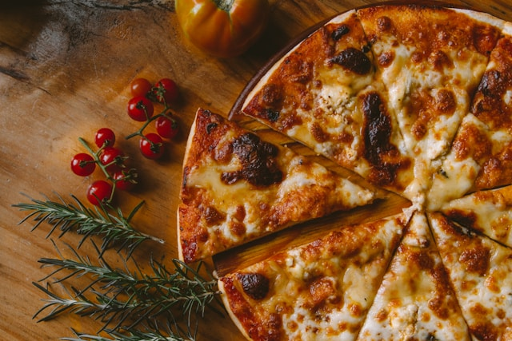

Pizza Recipe

Description
This basic pizza recipe creates a delicious, crispy, and chewy 12-14 inch pizza.
Ingredients
- Dough: 2½ cups (300g) all-purpose or bread flour, 1 tsp instant/active dry yeast, 1 tsp sugar, ¾ tsp salt, 1 tbsp olive oil, 7-9 oz warm water (105 - 115 deg F).
- Toppings: 1 cup pizza sauce, 1.5 cups shredded mozzarella, 2 tbsp Parmesan, pepperoni (optional).
Steps
- Activate Yeast: Mix warm water, sugar, and yeast. Let it sit for 5 minutes until foamy.
- Make Dough: Combine flour and salt. Add yeast mixture and olive oil. Mix until a dough forms.
- Knead & Rise: Knead for 3-5 minutes on a floured surface until smooth. Place in an oiled bowl, cover, and let it rise for 1-2 hours or until doubled.
- Preheat Oven: Preheat to the highest temperature (500°F/260°C). Place a pizza stone or baking sheet inside to get hot.
- Shape: On a floured surface, stretch or roll the dough into a 12-14 inch circle.
- Assemble: Spread a thin layer of sauce, top with cheese, and add toppings.
- Bake: Transfer to the hot pan and bake for 10-15 minutes until the crust is golden and cheese is bubbly.
Home